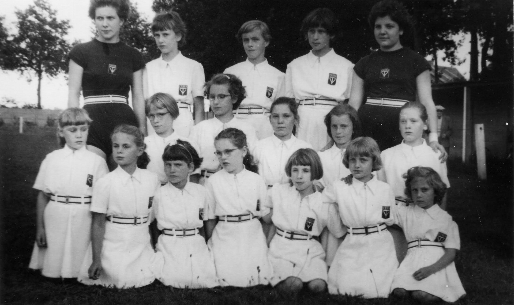
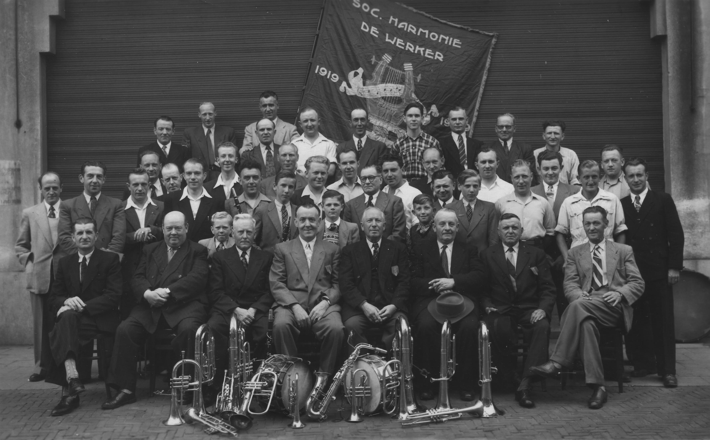
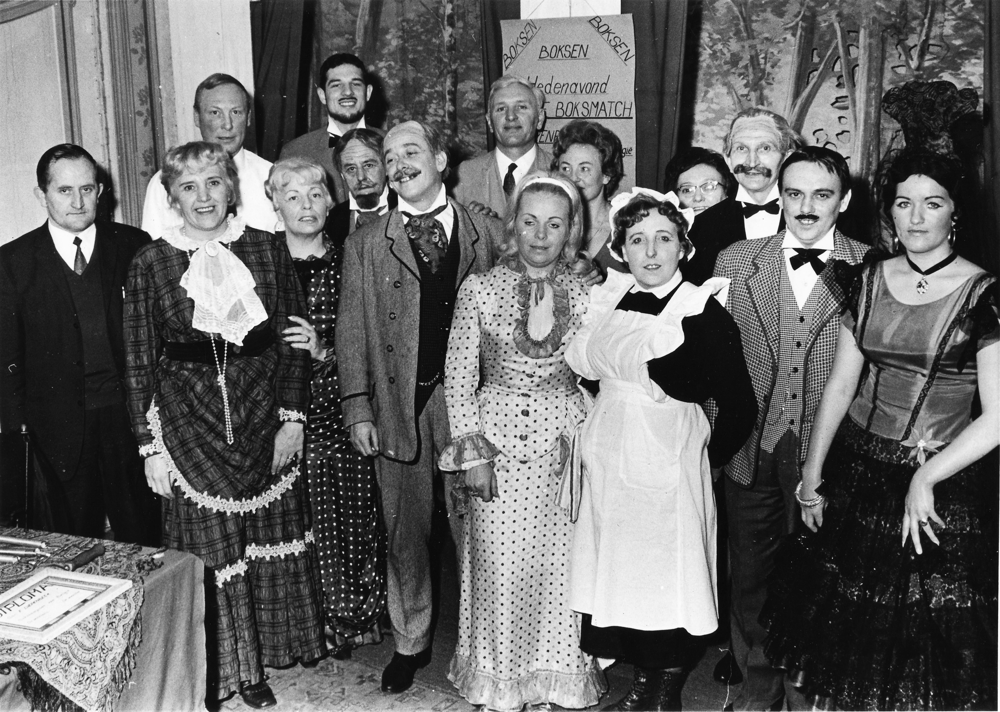
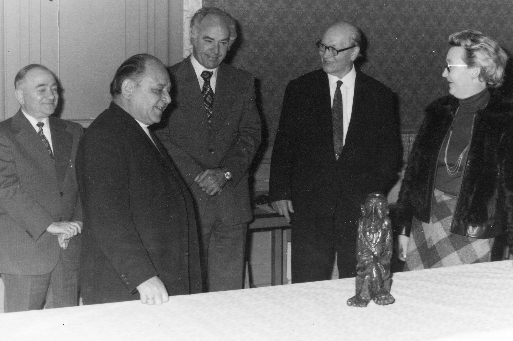

Sociaal Dienstbetoon En Partij
Al deze sociale verworvenheden zijn voor oningewijden een papieren doolhof, Sooi Noldus maakte zich die materie eigen door zelfstudie en bouwde er zijn sociaal dienstbetoon op.
Roger kwam als 21-jarige in contact met Sooi via het sociaal werk dat hij verrichtte. Sooi had de partij gevraagd om zijn sociaal dienstbetoon over te nemen. Samen met Nest de la Bruyère, Roland De Moor en Roger namen we die taak op ons. Dat was in 1973. Roger weet nog goed hoe we als eerste kennismaking toen bij Sooi aan de keukentafel zaten en hoe hij met zijn boekjes over de pensioenen ons diets maakte hoe we een loopbaan van iemand moesten invullen. Sooi had een notaboekje met allerlei telefoonnummers van kinderbijslagfonds, gehandicapten diensten, pensioendienst, vredegerecht en ga zo maar door.
Als Sooi het niet via een brief of telefoon geregeld kreeg stapte hij zelf met een aktetasje op de trein en reed naar desbetreffende instantie. Dat was de boodschap die we meekregen: achter de feiten aangaan.
Sooi wordt in 1946 partijvoorzitter en tracht de socialistische beweging nieuw leven in te blazen. Turnkring Volharding wordt vlot getrokken. Harmonie De Werker laat zich terug horen en toneelkring Voor en door het Volk verschijnt terug op het podium dit tot in de jaren 70 waar deze onder leiding van Robert Van Geel ter ziele gaat.
Jan Merks haalt bibliotheek ontwikkeling van onder het stof en Sooi Noldus, Marie Quick en Anna Cools stichten in 1946 de ouderlingenbond, de SOV, die onder Peer Vercauteren en Frans Neefs tot grote bloei komt.
In 1946 start Sooi ook zijn sociaal dienstbetoon op. Door zelfstudie leert hij de wetgeving omtrent de sociale zekerheid.
In de eerste naoorlogse jaren vecht Sooi verbeten om een voet in huis te krijgen bij de Raad van Arbeid te Breda en in’t bijzonder in het Stichtingsbureau van Belgische zaken. Daar lagen de dossiers van Essenaren wie loopbanen zich deels afspeelden over de grens, daar kon hij voor velen, die al eerder bot vingen de pensioenkastanjes uit het vuur halen. Eddy Braat, de dienstchef van sociale zaken op het gemeentehuis en secretaris van de COO, werkte nauw met Sooi samen. Hij zag Sooi als een ombudsman voor gans Essen, die de gemeenteburelen in en uitliep, alsof hij er jaren werkte.
Sooi zette zich in voor al wat paste in zijn puzzel van eerlijke en mensverheffende idealen. Het pas opgerichte accordeongezelschap ‘Hoger Streven’ van Eddy Suykerbuyk kon op hem en Sooi Guns rekenen als bestuursleden.



